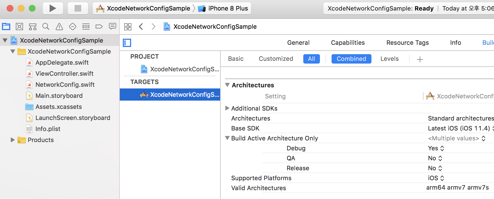

iOS 서버별 자동배포 환경 구축 방법
Xcode + Jenkins 설정을 통해 각 서버별로 자동배포 가능하도록 구축하는 방법입니다.
코드 수정 없이 각 서버 및 조건 별로 배포가능 하도록 환경설정 하는 방법에 대해서 기술합니다.
아래 내용에서는 QA용 배포 환경 설정을 추가하는 방법을 기준으로 설명하도록 하겠습니다.
Xcode설정
Xcode에서 각 서버별로 배포가능 하도록 환경 설정을 해줘야합니다.
Build Configurations 설정
Project > Info에 가면 Configurations 항목이 있습니다.
(기본 환경 설정은 Debug와 Release입니다.)
여기서 +버튼을 눌러 Duplicate 하면 되는데요, 어떤 환경설정을 Base로 생성할 것인지 선택하면 됩니다.
(Debug 기준으로 할지 Release기준으로 할지)
여기서는 Release기준으로 Duplicate하도록 하겠습니다.
아래와 같이 QA 환경이 생성된 걸 확인 하실 수 있습니다.
Target에의 Build Settings에 가보면 역시 QA 환경이 추가된 걸 확인 하실 수 있고요, 환경은 Release와 동일하게 구성돼 있는 것도 확인 가능합니다.

각 환경별로 서버 지정
Xcode > Targets의 Build Settings에 각 서버 도메인을 기록해 둡니다.
서버 도메인이라는 필드는 기존 설정값에는 존재하지 않는 값 이기 때문에,
환경설정을 새로 추가하도록 하겠습니다.
|
|
그러면 User-Defined 영역에 NEW_SETTING라는 이름으로 생성이 됩니다.
여기에 원하는 필드이름과 각 서버별로 지정할 도메인을 지정하면 됩니다.
Info.plist에 설정한 환경설정 값 연동
위의 Build Settings에서 각 서버별로 값을 입력했더라도, 바로 코드에서 이 값들을 불러올 수는 없습니다.
해당 값을 불러오기 위해서는 Info.plist에 연동해야 가능합니다.
Info.plist에서 환경설정 값을 설정합니다.
여기서는 AppDomain이라는 Dictionary를 만든 후 그 하위에 ServerURL을 추가했습니다.
이제 *.swift 코드에서 각 환경별로 서버 설정 값을 불러올 수 있게 됐습니다.
예를 들어 아래처럼 코드를 작성 할 수 있습니다…
Jenkins설정
그럼 Xcode에서 설정한 값을 어떻게 Jenkins에서 활용 가능한지 확인 하도록 하겠습니다.
Command-line 빌드 시
command-line 빌드 시 어떤 환경에서 빌드 할지를 선택할 수가 있는데, 이때 위에 설정한 (Debug | QA | Release)등을 선택해서 빌드하면 됩니다.
-configuration ${BUILD_CONFIGURATION} // Debug|QA|Release 중 선택
|
|
Jenkins 환경설정
Jenkins의 구성에서 매개변수 설정
Execute Sell에서 실행 Command에 매개변수 값을 인자로 전달
빌드
위의 매개변수 설정까지 마쳤으면 각 서버별 배포를 위한 모든 환경설정이 끝났습니다.
이제, 각 서버별로 배포 가능한 상태가 됐습니다.
서버 설정 뿐 아니라 앱에 필요한(예를 들어 출력 로그레벨, Debug모드 활성화 여부 등) 환경설정을 미리 설정 후 배포시에 이를 결정하는 방식으로 활용가능 합니다.
Source
위 예제에 대한 소스는 github에서 다운 받으실 수 있습니다.